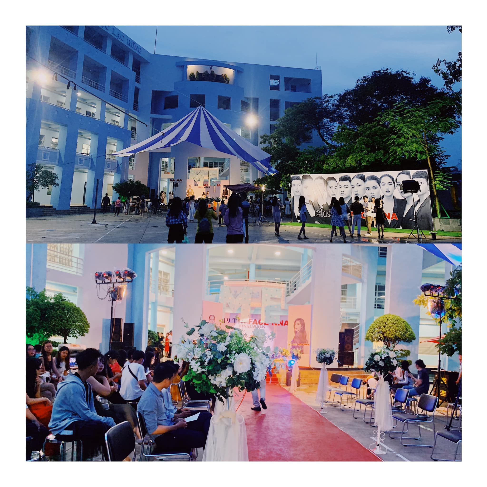
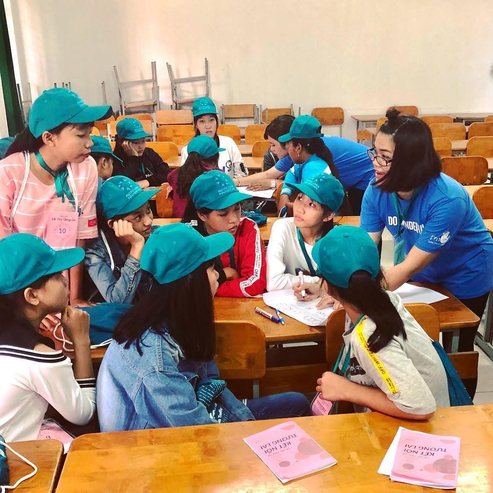
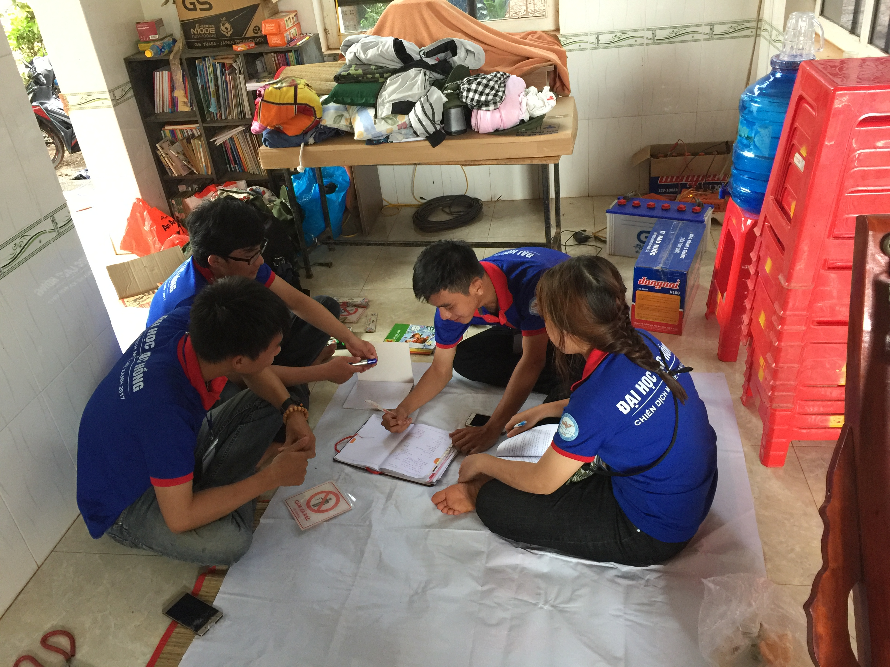

The Golden Play

“The 2020 Golden Play” is a lively English-speaking contest for students of the Faculty of
English Language at Lac Hong University. Through weekly vlog challenges and a final round for the top six
contestants, participants showcase their English skills, creativity, and audience engagement. With support
from faculty mentors and technical teams, the contest offers a fun, skill-building experience with
attractive Gold, Silver, and Consolation awards
“The 2020 Golden Play” is an English-speaking contest for students of the Faculty of English
Language at Lac Hong University. With weekly vlog challenges and a final round for the top six, participants
display their skills and creativity, supported by faculty mentors. The contest offers a fun experience with
Gold, Silver, and Consolation awards.
The Face NNA

“The Face NNA” is a flagship modeling and talent competition organized by the
Faculty of English Language, Lac Hong University. The event aims to create an
inspiring platform where students can express their confidence, creativity, and
communication skills through performance and presentation. It is not only a stage for
showcasing beauty and style, but also a meaningful journey of personal growth, self-
expression, and leadership development
“The Face NNA” is a modeling and talent competition by the Faculty of English Language at Lac
Hong University, giving students a platform to show confidence, creativity, and communication skills.
Camp Connect

Summer camp brings students from all over the Mekong Delta in Vietnam together with
volunteers from around the world, creating a vibrant and diverse environment for cultural exchange.
Throughout the program, participants engage in team-building activities, language practice, community
projects, and shared daily routines that help them understand one another’s backgrounds, traditions, and
perspectives. This experience not only encourages curiosity and open-mindedness but also builds a strong
sense of connection among everyone involved. By the end of camp, many new friendships have been formed, old
friendships have grown even stronger, and participants leave with lasting memories and a deeper appreciation
for the communities they represent.
Summer camp brings students from all over the Mekong Delta in Vietnam and volunteers from
around the world together, giving them a chance to learn about each other’s communities.
Green Summer Volunteer Campaign

Green Summer is a volunteer campaign where students come together during their summer break
to make a positive impact on local communities. Volunteers engage in activities like teaching children,
supporting families, cleaning the environment, and promoting social and environmental awareness. These
efforts help students build teamwork, leadership, and empathy while creating meaningful connections and
memorable experiences. The campaign turns summer into a time of growth, service, and community engagement.
Green Summer is a volunteer campaign where students come together to create meaningful
community impact during the summer break. Through activities like teaching children, supporting local
communities, cleaning the environment, and promoting social awareness, volunteers spread positivity and
teamwork. The campaign encourages youth to grow, connect, and contribute—turning their summer into a season
of service, learning, and unforgettable memories.